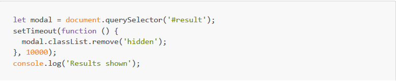
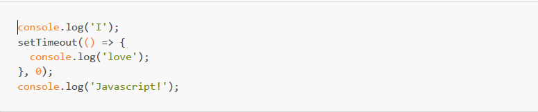

1. What is the purpose of the async keyword in JavaScript?
Answer: A
2. In an async function, what does the await keyword do?
Answer: B Explanation: The await keyword is used to pause the
function's execution until the promise it awaits is resolved.
3. Which of the following is a valid use case for using async/await in JavaScript?
Answer: D Explanation: Async/await is commonly used when
fetching data from APIs or performing other asynchronous
operations.
4. What is the purpose of the Fetch API in JavaScript?
Answer: C
5. When using the Fetch API, what method is used to handle a response and extract JSON data?
Answer: B
6. Which statement is true about error handling in async/await?
Answer: D
7. What is the primary benefit of using async/await over traditional callbacks?
Answer: A
8. What does the setInterval() function do in JavaScript?
Answer:C
9. How do you stop the execution of a function scheduled with setInterval()?
Answer: B
10. When using clearInterval(), what is the required argument?
Answer: D Explanation: clearInterval() requires the interval ID
returned by setInterval() as its argument to clear the interval.
11. What is the primary advantage of using Axios over the Fetch API?
Answer: A Explanation: Axios is often favored for its simplicity
and ease of use compared to the Fetch API.
12. When would 'results shown' be logged to the console?

Answer: B
13. Why might you choose to make your code asynchronous?
Answer: D
14. What is the HTTP verb to request the contents of an existing resource?
Answer: C
15. Which method call is chained to handle a successful response returned by fetch()?
Answer: C
16. Which statement is applicable to the defer attribute of the HTML <script> tag?
Answer: A
17. What will be logged to the console?

Answer: A
1. What is ‘callback hell’ in the context of using callbacks, and what are its disadvantages?
Answer : “Callback hell” is used when you have many nested
callbacks in our code. Think of it as a layer cake of functions
where each layer depends on the one above it. This makes our
code look like a pyramid, often called the “Pyramid of Doom.”
The downside? It makes our code hard to read and even harder to
debug. Plus, each new layer adds complexity, making future
changes a headache.
2. Can you explain what asynchronous programming is?
Answer : Asynchronous programming is a form of programming that
allows for tasks to be completed out of order. This means that a
program can start a task and then move on to other tasks before
the first one is completed. This can be helpful in situations
where a task might take a long time to complete, but the program
doesn’t need to wait for it to finish before moving on
3. How does async/await help with performance and scalability?
Answer : Async/await can help improve performance and
scalability by allowing your application to do other work while
it is waiting for a task to complete. This can help avoid
bottlenecks and keep your application responsive. Additionally,
using async/await can help reduce the overall amount of code
needed to be written, making your application easier to
maintain.
4. What is the purpose of the Promise constructor in JavaScript?
Answer : The Promise constructor is used to create a new Promise
object. A Promise object represents an asynchronous operation,
and can be used to track the status of that operation. A Promise
can be in one of three states: pending, fulfilled, or rejected.